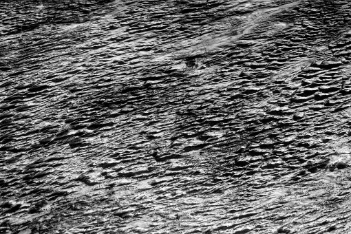

Earth from above, in black and white
On my way from Korea back to Europe, I had an amazing flight.
My original flight got cancelled. But Finnair quickly found a ticket with KLM for me. Direct flight to Amsterdam.
When getting the ticket I asked for a seat next to a window. I thought that the guy didn’t understand or care what I said. He seemed completely oblivious to my request.
But as you can see, I got the seat next to the window.
The weather was great. There were amazing clouds as we flew over the yellow sea.
This is somewhere in northern China. That’s what the flight attendant told me.
The Gobi desert.
Slightly cloudy.

Patterns. If you look closely you can see few roads down there.
I’m really happy with how these pictures turned out.
This flight, especially the amazing Gobi desert, was one of the strongest experiences in my life.
PS: You can view bigger versions of the pictures in my photo gallery. Also, check out my flickr photostream.
2 thoughts on “Earth from above, in black and white”
Delit 2009-12-10
Great photos, but why not in color?
tasuki 2009-12-10
That’s very simple – because the coloured versions sucked. ^^
Add your comment — How does this work?